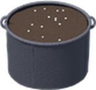
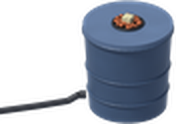
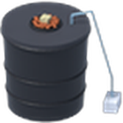
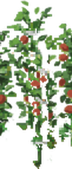
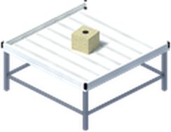
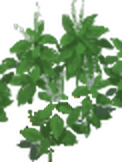
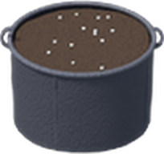
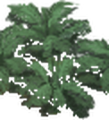
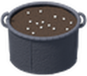
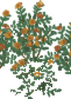
crops in grow bags
Every vanilla crop, from tomatoes to wheat.
crops in hydro
Herbs, greens, tomatoes, peppers, flowers and more.
faster in hydro
Each growth step takes 15% less time.
An add-on for Dazed Dank. Tomatoes, lettuce, herbs and the rest grow by vanilla's own rules, in Dank's containers.
Which Crops Go Where
Every crop grows in a bag. Most of them grow in hydro too.
Grow bags
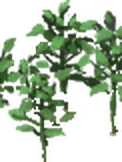
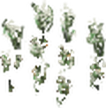
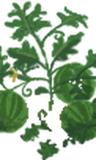
Small, Large and XL Grow Bags, filled with potting soil first, as for cannabis.
Hydro
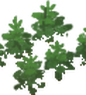
DWC and XL DWC buckets, RDWC sites and flood tables, with rockwool or clay pebbles in and water in the reservoir.
Hydro or grow bag: 37 crops
Needs soil: grow bags only
Root, bulb, sprawling and grain crops. In hydro their Sow Seed row is greyed out:
How They Grow
Vanilla's rules, in Dank's containers.
Sow Seed
lists the seeds you carry that can grow there
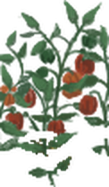
Bag: water by hand
like a vanilla plot
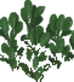
Hydro: it drinks
about 0.3 L an hour from the reservoir
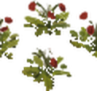
Harvest
pick it as in a vanilla plot
Time for each growth step. A hydro plant stays watered while the reservoir holds water (on a flood table, while the rockwool is wet), and dries out when it runs dry.
Every condition, every stage
Healthy
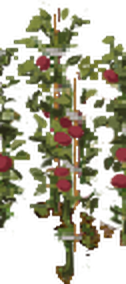
Sick
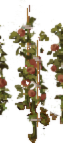
Dying
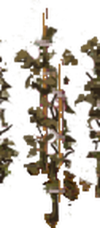
Dead
Each stage has its healthy, sick, dying and dead plant, so you can see how it's doing at a glance.
Harvest & Grow Inside
Pick it, sow again, keep it going indoors.

Harvest, then sow
A one-time crop leaves the container empty and ready to sow again. Regrowing crops keep going after you pick them, and a plant that rots away empties it too.
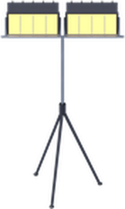
Kill Crops Grown Inside
With vanilla's sandbox option on, a powered grow lamp that reaches the plant, or a Dank grow room, keeps it alive indoors.
The Plants
Each crop drawn as one plant, without vanilla's furrow.
Tomato
Sunflower
Bell pepper
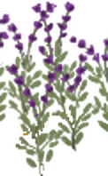
Lavender
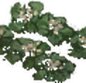
Cauliflower
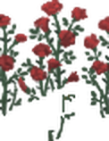
Roses
Wheat
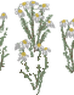
Chamomile
Lettuce
Marigold
Hops
Strawberry
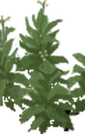
Tobacco
Basil
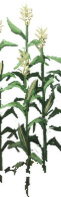
Corn
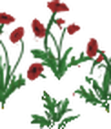
Poppies
Cabbage
Jalapeño
Kale
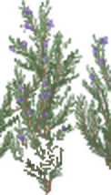
Rosemary
Green peas
Garlic
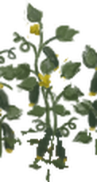
Cucumber
Mint
55 vanilla crops, cut from Project Zomboid's own crop art · every growth stage and condition
Needs Dazed Dank 0.56 or later. Dank does the growing; this add-on says which crops go where and supplies the plants.
Cannabis grows the same either way. Without the add-on, Dank's containers take cannabis only.
Vanilla crops only. Crops from other mods have no plant here and can't go in Dank's containers.
Nothing to set up. No new items or recipes: sow straight into the bags and hydro you already have.